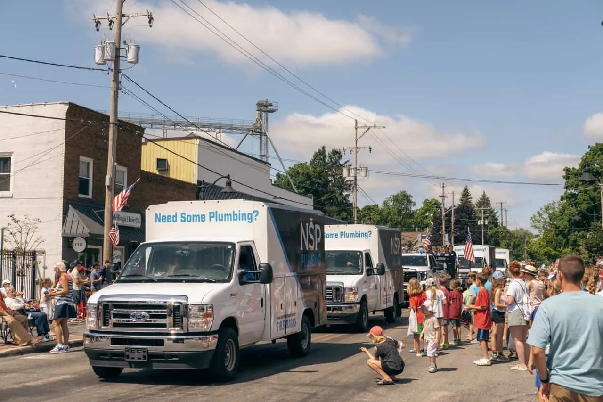
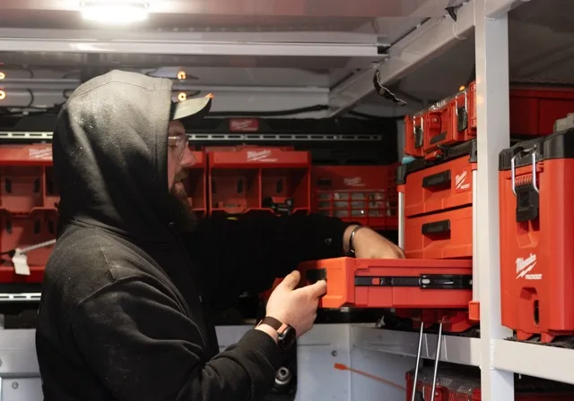

A commercial book built on top of a business that only rang when something burst.

- +50%
- 2 months
- Rev share
How this was measured
Residential emergency work is tracked per job through a channel-tagged number. Commercial revenue counts only where the first touch appears in our outbound records, recognised on invoice rather than at account opening. Work from existing customers is excluded from the share.
Situation
NSP opened in 2021 and grew fast on the strength of answering the phone. Emergency work, 24/7, across Grand Rapids and the surrounding communities, and a five-star reputation built one burst pipe at a time. The problem with a business built on emergencies is that it only exists when something goes wrong. Revenue spiked in a cold snap and went quiet in April, and none of it could be forecast.
They wanted the commercial and property-management side, which pays year-round and does not care what the weather is doing. It also does not arrive through the channels that bring in a flooded basement at two in the morning.
Strategy
Emergency work already converted, so we left the machinery that caught it alone and simply made it tighter: intent-led paid search, a tracked line per channel, and after-hours routing that stopped a 2am call going to voicemail. That side funded everything else.
Commercial was the actual job, and it is slow. Named-account outbound against property managers, facilities teams and general contractors across West Michigan, measured in accounts opened rather than leads generated, because commercial plumbing is won by being the number already in the building's file before anything breaks.
Weighting our fee to the outcome is the only reason a young firm could afford to build a commercial book that pays later rather than chasing whatever billed this month. Billing the whole thing up front through that stretch would have come straight out of the emergency margin keeping the lights on.
The paid account was built from nothing. NSP had never run search, so there was no history to salvage and no bad habits to unpick — we started with commercial intent rather than the emergency terms everyone in the trade bids on, because a burst pipe at 2am buys one invoice and a building manager buys a schedule. Negative keyword lists did as much work as the bids: filtering out DIY, parts and residential searches kept the budget on enquiries a commercial crew could actually service.
Every campaign was held to booked work rather than to leads. A form fill that never turned into a job counted as a cost, not a conversion, which is the only way a PPC account stays honest when the person running it is paid on revenue.
Before any of that could be bid on, the site had to be able to say what was happening on it. We built a data layer from scratch — every form, every call tap, every quote request emitting a structured event with the service type, the property type and the urgency attached. That is the difference between an ad account that knows a lead arrived and one that knows a building manager asked about a backflow test.
With intent on every event, campaigns could be built around what someone actually wanted rather than the keyword they happened to type. A search for a burst pipe and a search for a scheduled inspection are worth very different amounts to a commercial plumber, and they now bid like it.
Identity resolution is what made the follow-up work. Stitching known contacts across devices and sessions meant retargeting could address the person who abandoned a commercial quote at the specification stage differently from someone who read one page and left — and could stop addressing people who had already booked, which is the cost most retargeting quietly wastes.
All of it feeds one loop: better intent going in means the platforms optimise against the jobs that are actually worth having, return on ad spend climbs as a result, and our fee comes out of that increase rather than out of a retainer that would have been owed either way.

Results
Revenue growth of +50% across 2 months, on a business doing high seven figures. A single-digit share of tracked new revenue came to us out of that growth, which is the part of our fee that exists only if the number moves.
“The commercial side was not worth anything at the start, and I knew it. If the full bill had been due every month regardless, I would have pulled the plug before it ever turned.”